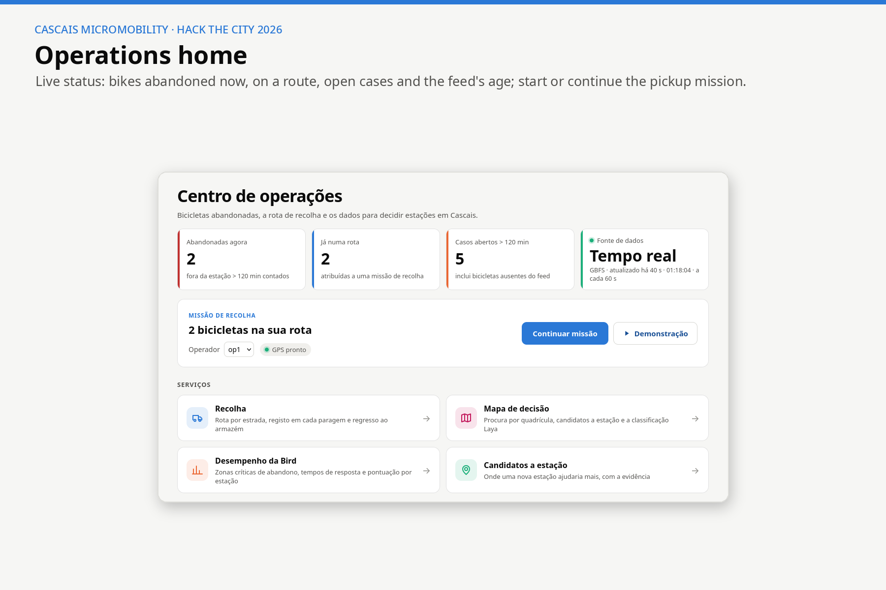
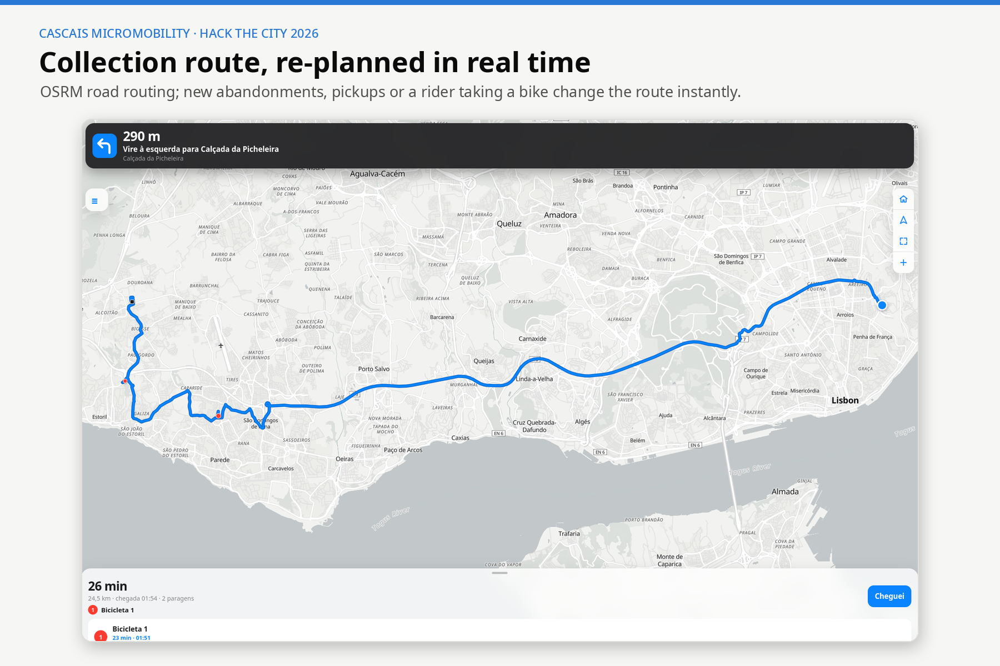
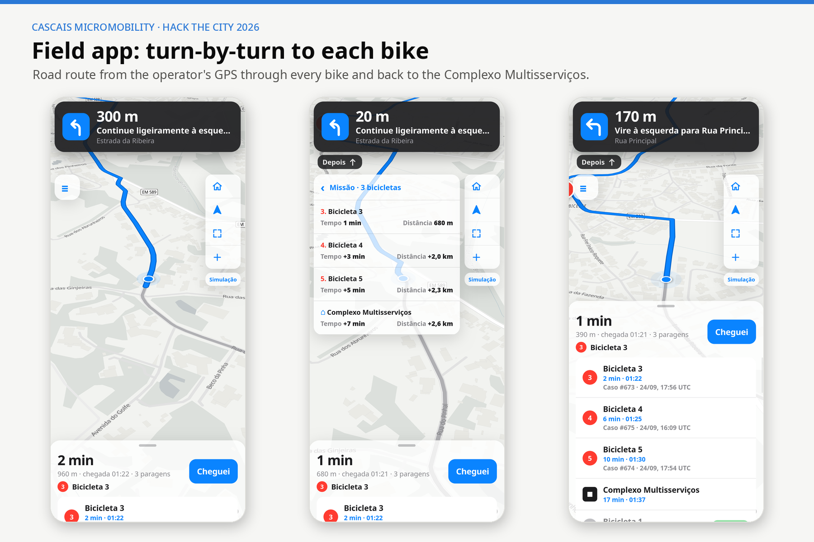
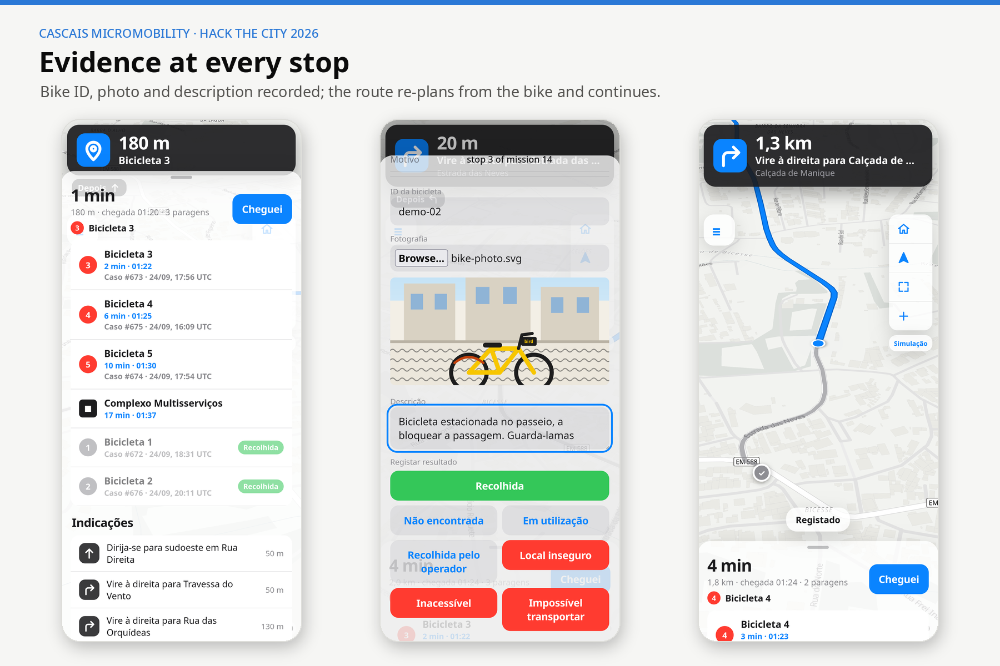
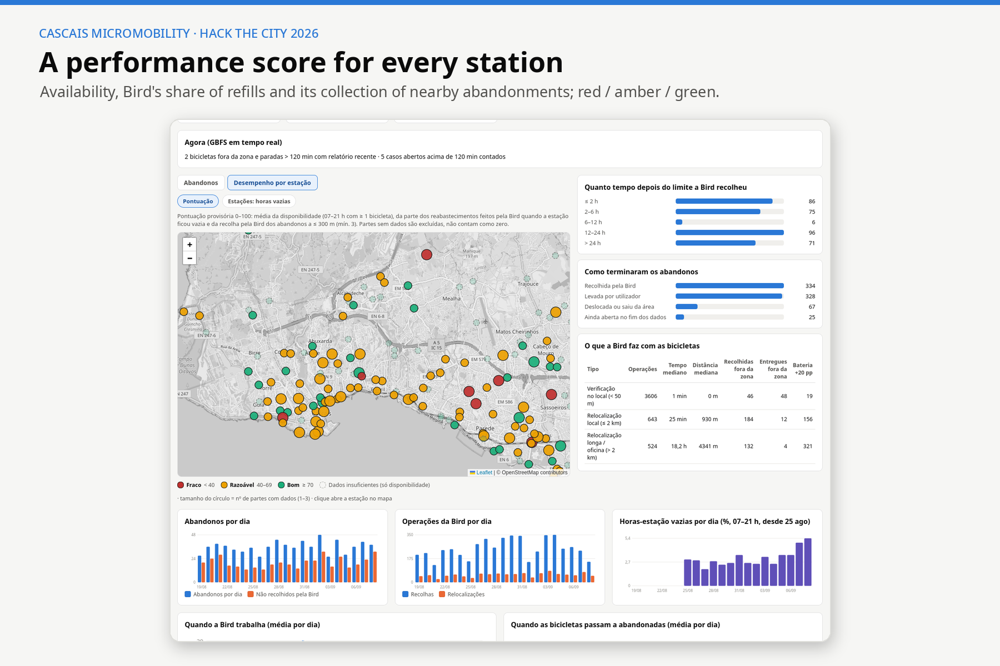
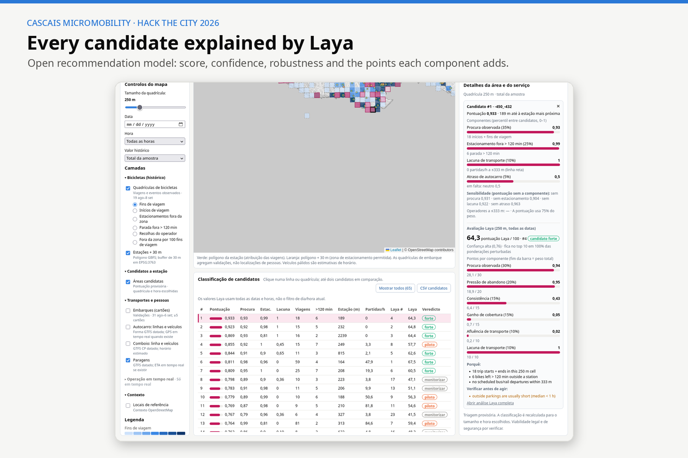

docs/presentation/cascais-micromobility-slides.pdf in the repository
The rule. A bike is abandoned when it stays more than 30 m outside a station area for more than 120 minutes. Only minutes between 08:00 and 20:00 (Lisbon time) count. The rule is set in one place and every screen applies it the same way.
1. The problem
Shared bikes in Cascais must be returned to a station area, but many are left outside it. They block pavements and look like neglect. The municipality has no tool to see them in time or to check whether the operator collects them. Bird's own event log for 19 Aug–8 Sep 2026 shows how large the gap is:
754abandonments in 21 days (35.9 per day)
55.7 %never collected by Bird
12.3 hmedian Bird response after the 120-minute limit
40.5 %of trip ends inside the painted station area
2. The proposed solution
One web platform with three connected parts:
Real-time detection. Bird's live GBFS feed is read every 60 s. Each parked bike is measured against its station polygon plus 30 m, and the enforcement minutes are counted. A bike past the limit becomes a case with a timeline (candidate → eligible → assigned → picked up / resolved). A bike that disappears from the feed is marked uncertain, never assumed to be collected.
Dynamic collection route. A pickup mission starts from the team's position, fills the van with the oldest bikes and returns to the Complexo Multisserviços depot. It uses real road routes (OSRM on OpenStreetMap) and is re-planned automatically whenever the pool of bikes changes: a new abandonment, a pickup by the operator, or a rider starting a trip. The mobile field app gives turn-by-turn directions and records the bike ID, a photo and a description at every stop. It works offline.
Decision map. Supply and demand KPIs per station or per grid square (50–1,000 m), public transport context and live vehicles, a 0–100 operator performance score per station, abandonment hotspots, and Laya, an open model that ranks where a new station would help most. Each ranking shows its reasons, confidence and robustness.
3. Target users and beneficiaries
Municipal mobility staff (Cascais Próxima / Câmara Municipal): see abandoned bikes live, send a team, and hold the operator to its contract with evidence.
Field collection teams: a phone app that tells them where to go next and records what they found.
Planners and decision makers: evidence for where to add, move or resize stations.
Residents and riders: clearer pavements, and bikes available where people actually need them.
4. The prototype
The prototype runs end to end with Docker. Its main screens:

Operations home: live status, pickup mission and services.

The collection route is re-planned in real time.

Field app: turn-by-turn directions to each bike.

Evidence at every stop: bike ID, photo and description.

Bird performance score per station (provisional, 0–100).

Decision map: every station candidate explained by Laya.
Hands-free demonstration (/field?sim, shown in the video): five demo bikes are placed at real past abandonment spots. The van drives out of the depot to the first bike, and the app selects a photo, types a description and records the pickup by itself. The route is then re-planned toward the next bike. Demo data never mixes with real cases or counts.
5. Technology and data
Frontend
React, Vite and TypeScript; MapLibre GL and Leaflet (heat maps); a responsive field app; PT/EN interface
Operations
FastAPI and Postgres: detector, cases, missions, replay and live modes. The pure logic (geometry in EPSG:3763, enforcement clock, routing) is unit-tested.
Analysis
FastAPI, PostGIS and DuckDB: an ingest and derive pipeline, the metric grid, the Laya model and the Bird score
Routing
A local OSRM engine on an OpenStreetMap graph from Cascais to Lisbon
Deployment
Docker Compose with 6 services; tested with pytest and Playwright browser checks
Data
Challenge datasets (Bird trips and vehicle events, stations and GBFS snapshots, Waze traffic, MobiCascais card validations, dated transit operation plans); Bird's live GBFS feed; TML / Carris Metropolitana live vehicle positions
6. Expected impact
Faster response: bikes are flagged at the 120-minute limit instead of a median of 12 hours later, so they spend less time blocking public space.
Accountability: every collection leaves evidence (photo, position, time). The municipality can measure the operator's response station by station and use it in contract discussions.
Efficient field work: collection trips follow a short road route that updates itself, which saves driving time and fuel.
Better investment: station siting is guided by observed demand and abandonment pressure, with the reasons and uncertainty shown next to every recommendation.
7. Implementation and scalability
Any operator, any city: detection only needs a standard GBFS feed and station polygons. The rule, the depot, the van size and the time window are settings in one file, and OSRM can load any OpenStreetMap region.
Pilot path: run it next to the current process in Cascais for one month and compare its detections with what teams find in the field. Then tune the rule and the score weights with the municipality.
Production steps: authentication and roles, hosting on municipal or cloud infrastructure, a data-sharing agreement for the operator's event log, and more operators through the same GBFS interface.
Known limits: the historical sample is short (3 weeks of bike data, 1 week of card data); the Laya weights and the station score are provisional, not approved KPIs; and a new station site still needs legal, safety and accessibility review.
make up starts all services; make seed loads 157 stations and 53,764 bike events; make osrm builds road routing once (about 5 minutes).
Open http://localhost:5173/ (home), /field (field app, also on a phone on the same Wi-Fi), /field?sim (demo) and /data (decision map and Bird performance).
Tests: make test (backend) and docker compose exec analytics pytest -q (analysis).
The analysis data dump is shared through a private GitHub release because it contains hashed card IDs. It can also be rebuilt from the supplied datasets.